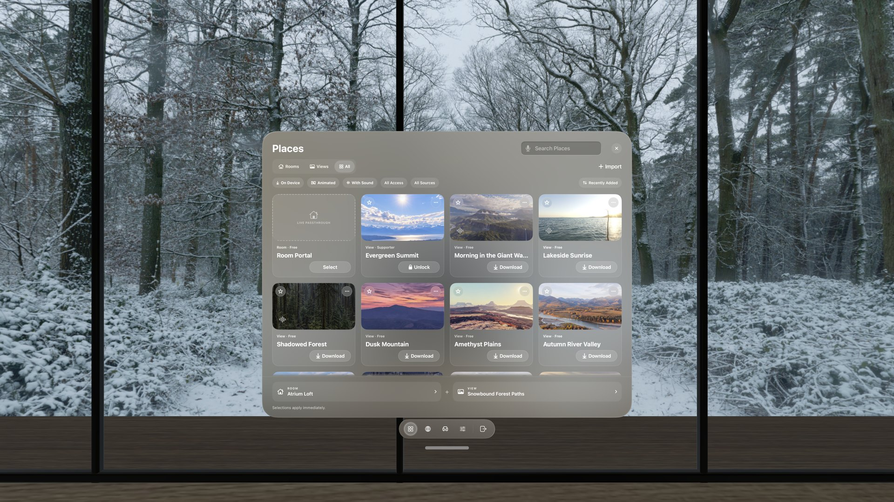
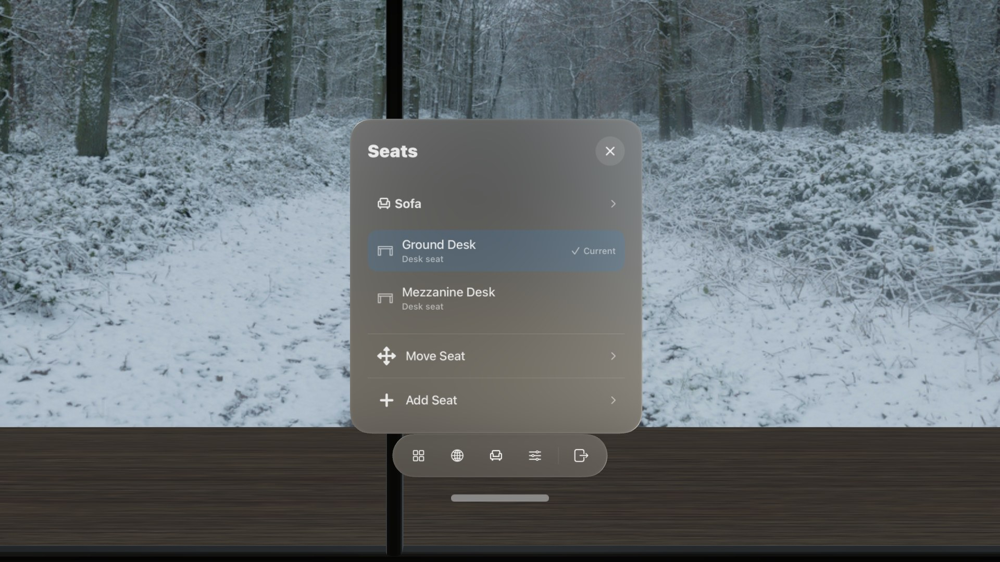

Start here · 10 minutes
Set up your first Place.
A Place is one View for the scenery and one Room for the space around you. Start with that pair, then learn the few buttons that bring everything else within reach.
Choose a View and Room
- Open Places. Choose the Places button at the left end of the Locus bar.
- Pick a tab. Rooms and Views show one kind of card; All shows both. Places also lists Rooms and Views you can download, so there is no separate Library.
- Choose a Room. Pick Room Portal to keep your physical room around you, or choose a 3D Room to enter a complete virtual space. Use a card's Select button; choose the card itself to read its details.
- Choose a View. This is the 360° scenery that appears beyond the Room or through your opened walls. A card that is not on your device offers Download instead of Select.
- Choose Enter Place. The current Room and View appear at the bottom of Places. Locus opens the experience that matches the Room you selected.

Use the filters under the tabs to show only what is on your device, Animated Views, or Places with sound. Search, filters, and sort order are remembered the next time you open Places.
Choose the experience that fits your room
New to Locus 1.2? A short guided tour opens the real Places, Seats, and Settings pages one at a time. Replay it any time from Settings → Setup & Permissions → Take the Guided Tour.
Know the Locus bar
The bar stays below your windows. Before you enter a Place it shows Places, Open Browser, and Settings; inside a Place it adds the controls that Place supports.
Virtual Space buttons, left to right
Want a control one tap away? Choose Settings → All Settings → Workspace → Customize Bar to add Quick Controls such as Desk Cutout, Recenter, Measure desk, Room lights, Sunlight, Hide desk, or Volume to the bar and change the order of its buttons.
In Room Portal the bar shows Walls, to close or reopen individual detected surfaces, and Show Room, to see only your real room for a moment. If tracking is interrupted, Try Again appears when Locus can look for your room again.
Choose how immersion works
Open Settings in a Virtual Space and pick one of the two Immersion choices at the top of Current Place:
Choose a seat
Choose Seats in the bar to see every seat the Room offers. Seats that share a table, sofa, or bar are grouped; open a group to pick the exact seat. Desk seats show a desk icon, and lounge seats show a chair. While Seats is open, every other seat in the Room shows a marker where you would sit; pinch one to sit there.

To sit somewhere the Room does not offer, choose Add Seat, then use Move & turn to step and turn the new seat into place and choose Save. Customize your Place covers personal seats in detail.
Find Settings and help
Inside a Place, Settings opens Current Place beside the bar. Choose All Settings to open the full Settings window, which has six sections:
Choose Close, or Settings again in the bar, when you want the panel out of the way. Your Place stays open.
Return to Places from Browser
Look at the first button in the Locus Browser toolbar—the same four-square icon as Places in the bar. Choose it to open Places, where you can change your Room or View. Your Browser window and page stay open.
Change and customize your Place
Open Places again and choose Select on another Room or View. While you are already inside a Place, the new choice applies immediately.
Once the layout feels familiar, continue with Customize your Place to turn the View, balance sky and Room lighting, control supported fixtures, add your own seats, and decide which changes to save.